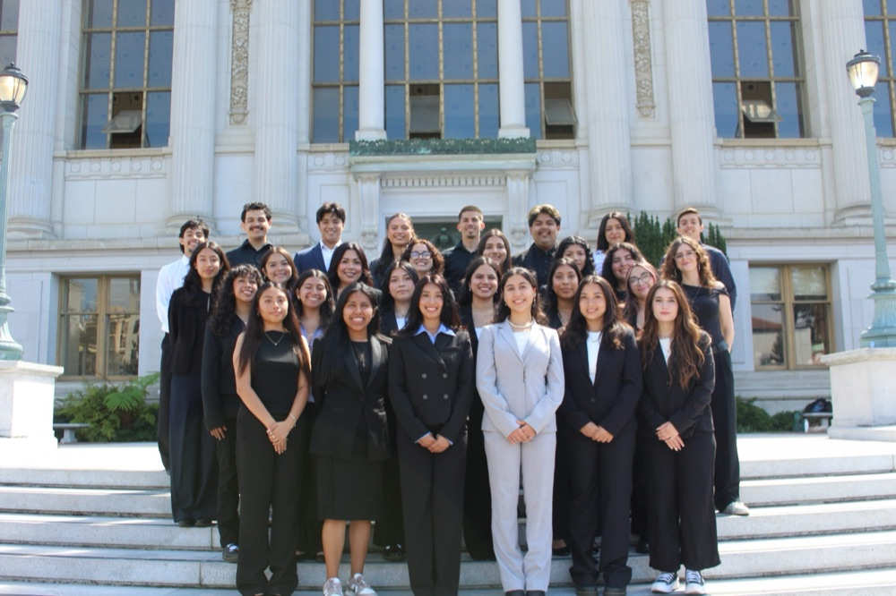
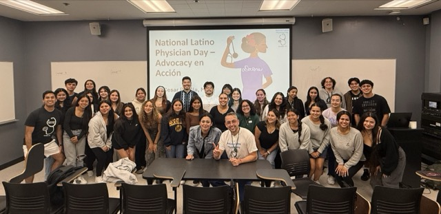
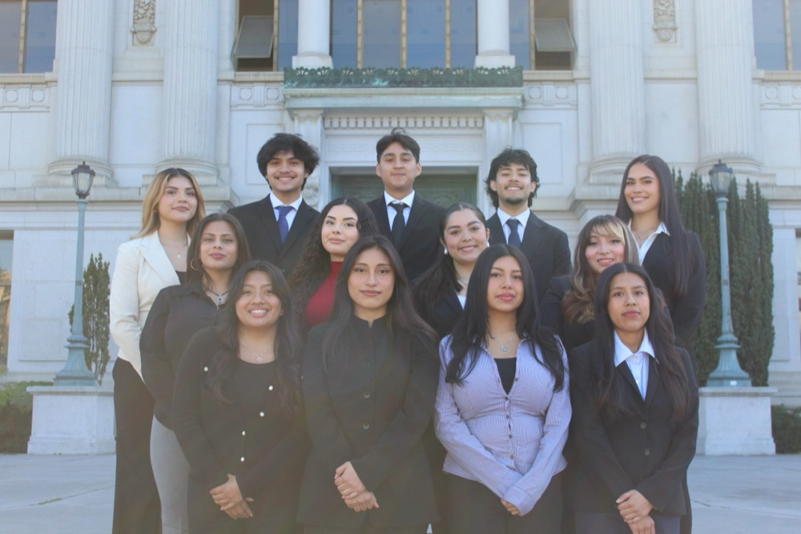
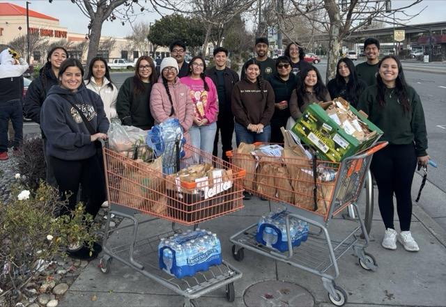
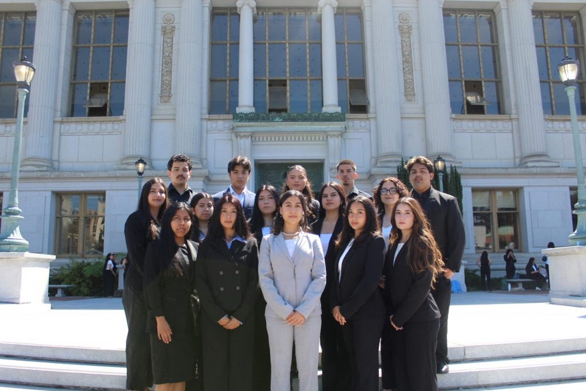
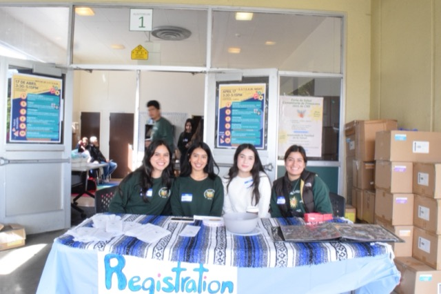
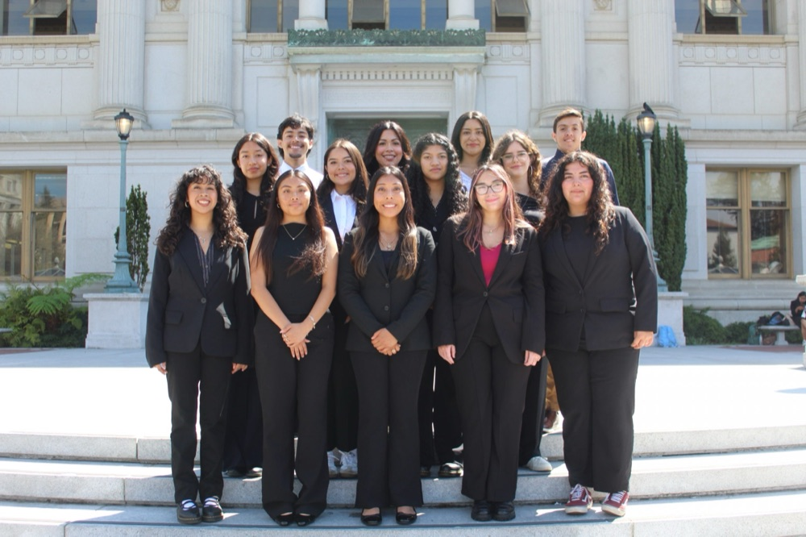
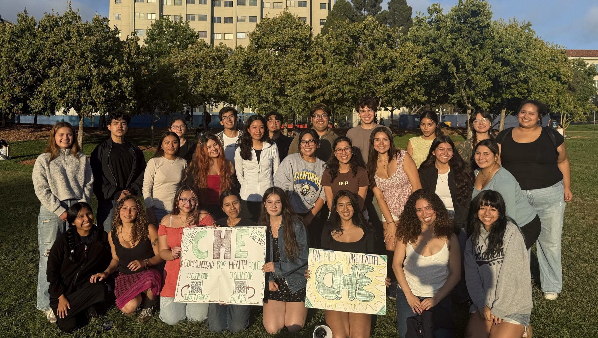

Rooted in community. Growing together.
Comunidad for
Health Equity.
A Chicanx/Latinx pre-health community at UC Berkeley.
Finding our paths. Caring for our communities. Together.







A few moments from our comunidad
01 / A place to belong
Big dreams are better
with good company.
We’re CHE: Comunidad for Health Equity, a home for students exploring careers in health.
We run mentorship and community service, and bring what we learn back to the communities we come from.
More about CHE
A legacy of showing up.
Since 1976 / Still growingOur roots1976 (50+ years)Founded at UC Berkeley
Our community40+Active members
Meet us6pmGeneral meetings, Wednesdays during the semester
Your next chapter starts with a hello.
There’s room
for you here.
Curious about CHE? We’d love to meet you.
Come to a meeting and find your community.